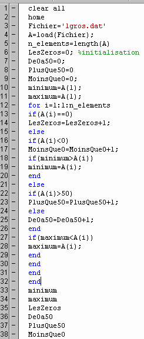

Décaler les instructions dans les structures de contrôle
Lors de la mise au point d'un programme, il arrive souvent que l'on insère
d'autres lignes, telles des instructions de contrôle. Décaler des
instructions devient une tâche fastidieuse. Afin d'augmenter la lisibilité d'un programme,
il faut respecter le plus possible les critères suivants :
- Ne pas dépasser 60 colonnes par instruction, car c'est plus
difficile à lire (et à imprimer). Une ligne d'instruction Matlab
peut se continuer en ajoutant trois points...
- Éviter de laisser inutilement des lignes blanches.
- Indenter les lignes de code dans les structures de contrôle.
- Deux à cinq espaces suffisent.
- Habituellement, les éditeurs de programme
comportent un utilitaire pour le faire automatiquement.
- C'est le cas
avec Matlab. C'est moins astreignant que de le
faire à la main.
- Reformater au besoin.
- Dans l'éditeur de Matlab, il suffit d'appuyer
sur les touches
Ctrl-A et Ctrl-I pour effectuer une indentation automatique
de tout le fichier en édition.
Exercice
- Copier le programme Chap3\Scripts\Classer.m dans le répertoire de travail de
Matlab.
- Dans la fenêtre Matlab, écrire :
edit classer
- Appuyer sur les touches
- Ctrl - A (Sélectionner tout)
- Ctrl - I (Indentation automatique)
- Ces instruction sont aussi dans le menu de l'éditeur.
 |
 |